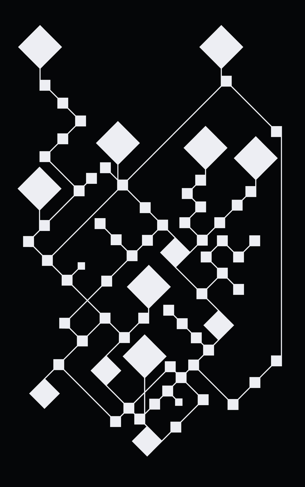
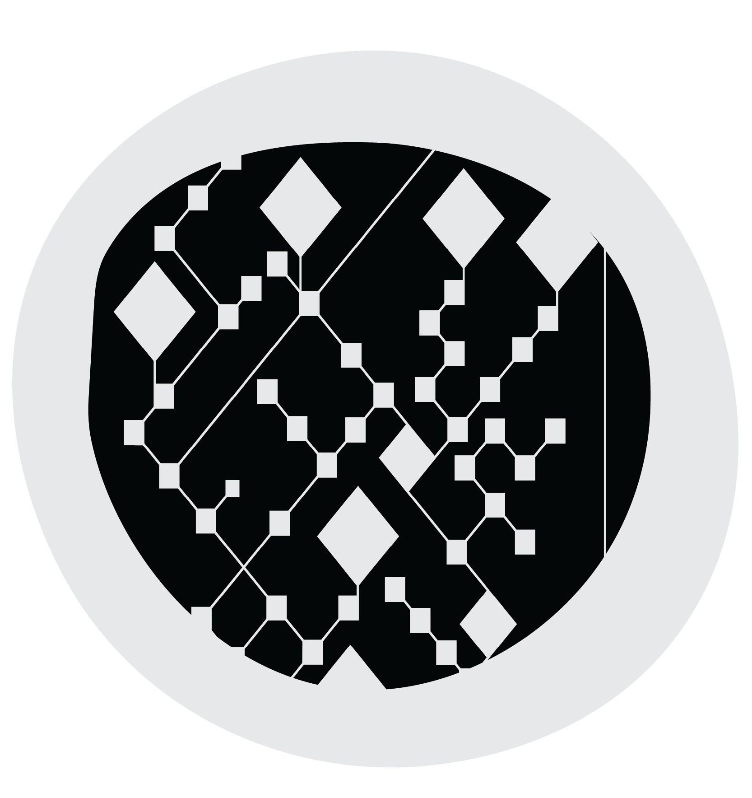
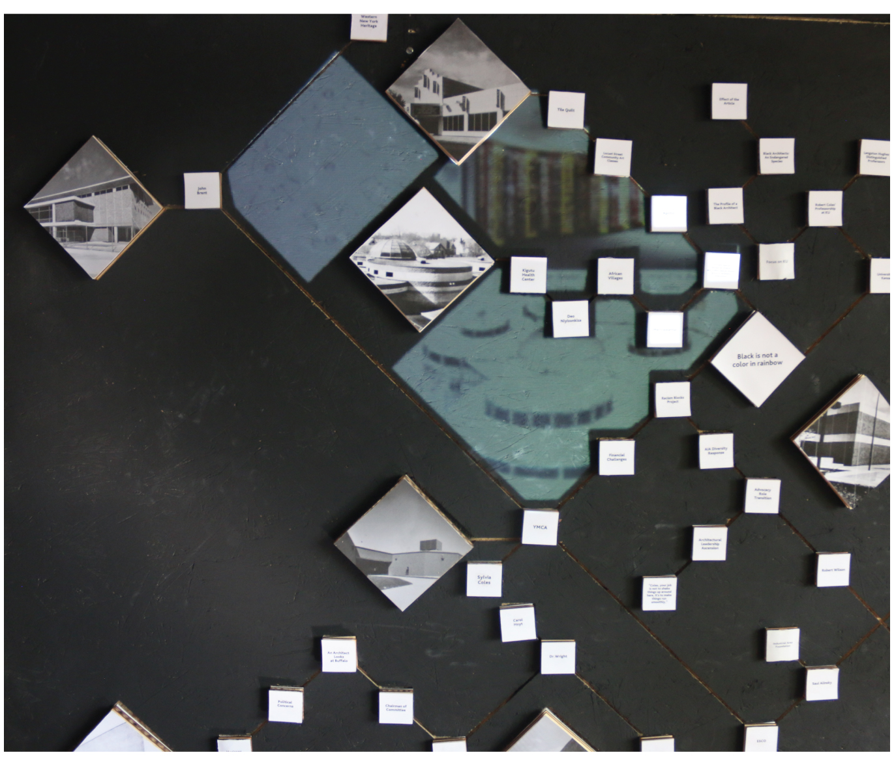
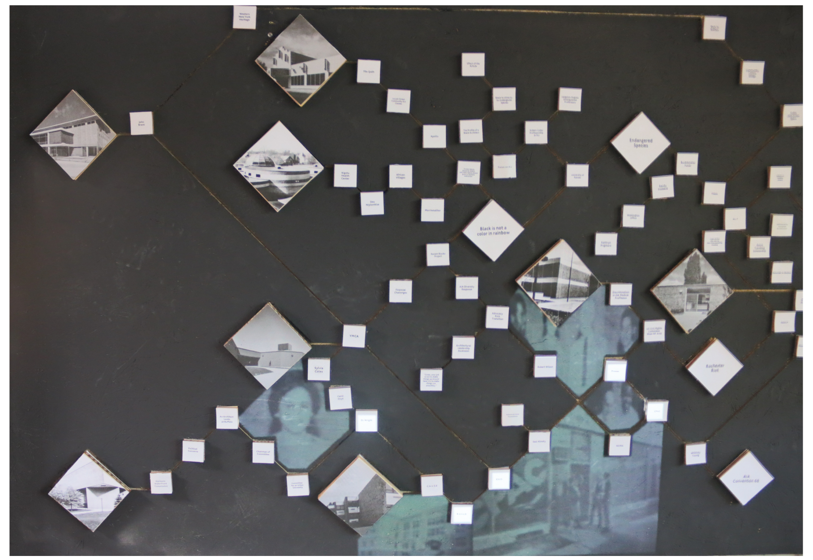
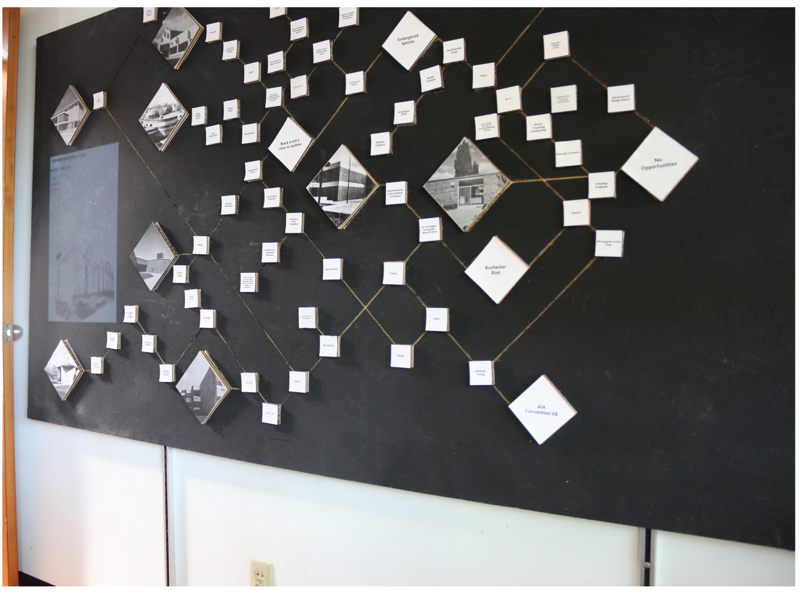
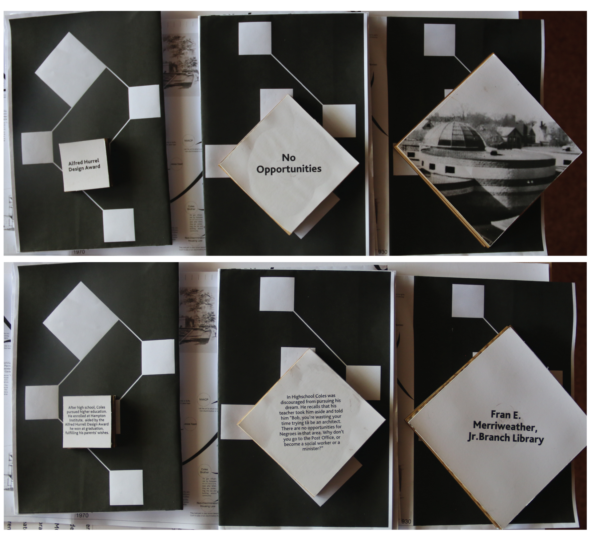
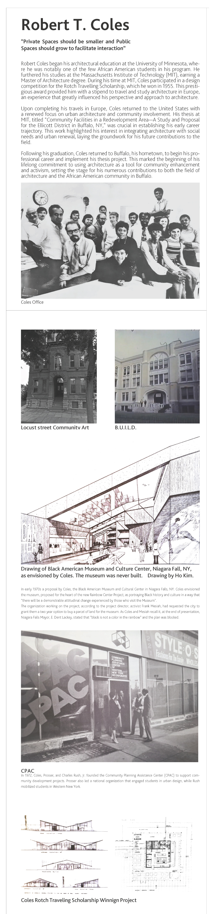
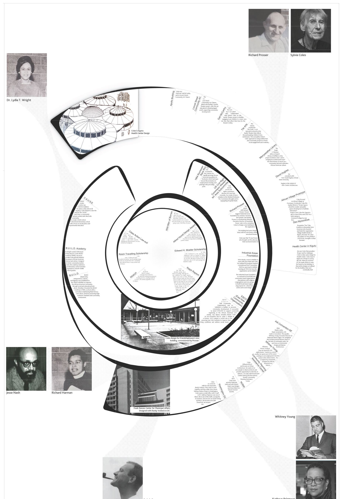
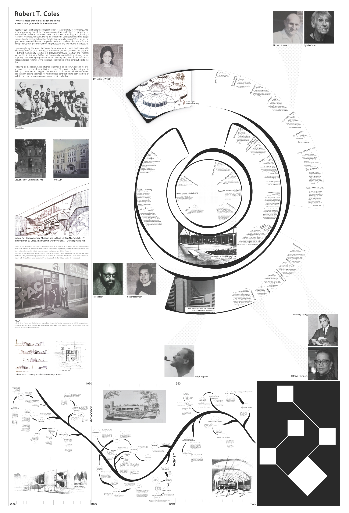
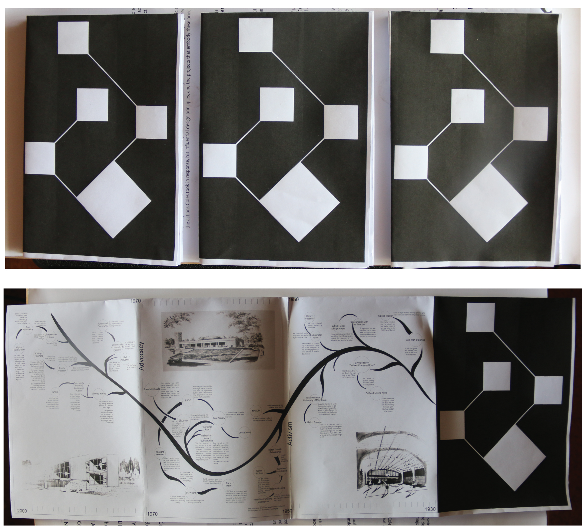

The “Tilted” interactive installation is a deeply engaging and insightful exploration of the life and professional legacy of architect Robert Coles, a figure renowned for his dedication to civil rights and architectural innovation. This unique exhibit is thoughtfully designed with a series of squares, each mounted on a large board, where visitors can interact by lifting the squares to reveal key aspects of Coles’ activism, influential design principles, and the significant life events that shaped his career.
Structured to reflect the dramatic and transformative moments of Coles’ life, certain squares are physically tilted, symbolizing the traumatic or pivotal events that galvanized him into taking decisive action. These tilted squares serve as focal points, linking contextually to adjacent elements that narrate the subsequent actions taken by Coles, his evolving design philosophy, and the resultant architectural projects that embody these ideals.


Adding a dynamic visual element to the educational experience, the installation employs projection mapping. This feature projects images and visuals related to the information on each square, creating a vibrant and immersive atmosphere that helps visitors visually and conceptually connect the various aspects of Coles’ life and work.
The installation highlights eight of Coles’ most significant projects, each chosen to illustrate a different aspect of his commitment to fostering community, diversity, and social justice through architecture. These projects are showcased on the largest of the tilted squares, emphasizing how Coles’ personal challenges and his responses to them culminated in profound professional achievements and societal contributions.
The overarching goal of “Tilted” is to provide a comprehensive and multifaceted view of Robert Coles’ contributions to both architecture and civil rights. By engaging visitors through interactive and visually compelling elements, the installation celebrates Coles’ enduring legacy, illustrating how his personal experiences acted as catalysts for professional innovation and societal progress. It is designed to inspire visitors, showing how architecture can serve as a powerful tool for advocacy and social change, and how individual actions can lead to significant transformative effects within society.


There are three types of squares. The large tilted squares represent buildings designed by Coles that are being exhibited. The medium squares represent traumatic events he faced or that affected all African Americans. The small squares show his actions in response to those events, with each small square linked to another. If an initial action hadn’t occurred, the final one wouldn’t have either.
EXHIBITION BOARD & PAMPHLET DESIGN



The map shows three main phases of Coles’ life. The first phase covers his early life as a student. The second phase details his mid-life activism in Buffalo, where he worked to create communities and build foundations. The third phase highlights his later life as an architect and advocate, designing for and around communities. This board also functions as a folded pamphlet for the exhibition visitors.

The Figure-Ground on the BIS sheet symbolizes the project’s concept, illustrating how every action is interconnected. The sheet unfolds branch by branch, representing Coles’ life in chronological order, much like a tree of life. The first page covers his early life, the second details his activism, and the third highlights his advocacy. This layout shows his transition from an activist to an advocate.